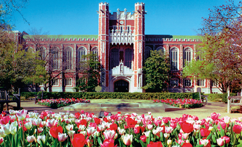
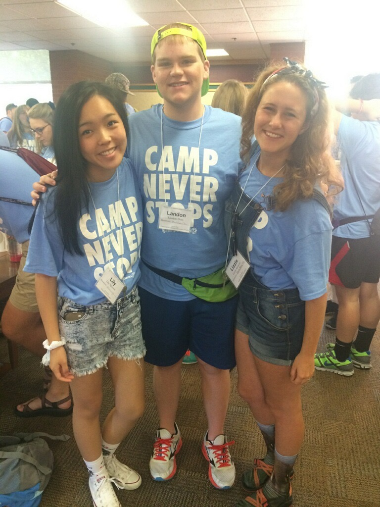
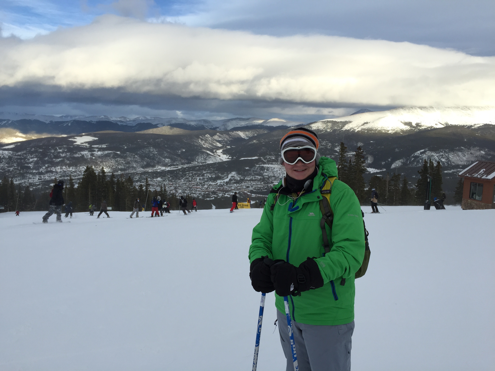

A Little bit about me

Hello, and welcome to my website! My name is Landon dare and I am a software developer. I have created this website in order to serve as an online resource for anyone looking to find out more about me. Whether you are a friend or future employer, I want to welcome you to my page, and I hope you have a look around!
Education
I am currently in my third year of college at the University of Oklahoma located in Norman Oklahoma. I am pursing a bachelor’s degree in Computer Science from the College of Engineering, and I am enrolled in the accelerated masters program in the hope of also getting my Masters of Computer Science. I currently maintain a GPA of 3.75 and have been on the dean’s honor roll for the past 3 semesters. I have also been fortunate enough to take part of Professor Hougen's research lab on risk and machine learning where I examined the affects of risk aversion on a population's evolution.
Organizations
I have been fortunate enough to have been apart of several organizations during my time here at the University of Oklahoma. Pictured above is one of my favorite organizations, Camp Crimson. Camp Crimson is a freshman orientation camp designed to welcome new OU Sooners to the college experience, and I volunteer as a small group Lead. I have also been apart of the President’s Community Scholars at the University of Oklahoma, a hand picked group of OU freshman dedicated to community service and volunteerism. Additionally, I am an officer and a founding member of the Computer Science Interview Prep Club, which is a club created with the express purpose of preparing underclassman for the world of professional interviews. There are a number of other organizations I have been fortunate enough to have been apart of, but These are my favorite and most dear to my heart.
Hobbies
I have many Hobbies, which I enjoy! Skiing is one of my favorite activities, and I am an avid skier. The image above is of me on my first ski trip to Breckenridge, Colorado in 2014. I love the outdoors and spend much of my time in Oklahoma at my Grandfather’s farm in Guthrie where we like to fish and shoot skeet. I am also known to occasionally enjoy skateboarding with my friends up and down campus.